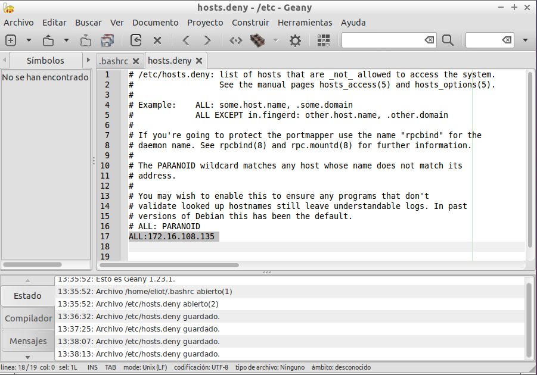

- Módulo: Sistemas Operativos
- Título del trabajo SSH
- Componentes del grupo: Eliot Farrais García
- Curso Académico: 2014/2015
- Fecha de entrega:
Pondremos una IP estática en nuestro Servidor, elijiendo como IP estática una de las del rango que nos ofrece el profesor
Crearemos el grupo remoteuser en la linea de comandos con el comando groupadd: sudo groupadd alumnos

Crearemos varios usuarios con el comando useradd: sudo useradd remoteuser1 -g remoteuser -d /home/remoteuser1 -m -s /bin/bash remoteuser1
Los usuarios a crear son
remoteuser1
remoteuser2
remoteuser3
remoteuser4

Editaremos el archivo /etc/hosts del servidor que vamos a usar en el Server.
Usaremos el comando nano /etc/hosts
Archivo /etc/network del cliente de Lubuntu
Archivo /etc/nework del cliente de Windows 7
Instalamos el servidor ssh con el comando en synaptics. El comando a buscar es openssh-server
Instalamos openssh-client en el cliente
Si todo ha salido correctamente se debe de poder realizar la conexión entre cliente y servidor.
por la consola de comando desde el cliente al servidor
Desde un cliente de Windows 7, con PUTTTY podemos realizar la conexión ssh, al servidor de ubuntu
Comprobar contenido del fichero $HOME/.ssh/known_hosts. en el equipo cliente. ¿Te suena la clave que aparece?
Generar nuevas claves de equipo en SSH-SERVER. Como usuario root ejecutamos en SSH-SERVER: "ssh-keygen -t rsa -f /etc/ssh/ssh_host_rsa_key"
Comprobar qué sucede al volver a conectarnos desde los clientes, usando el usuario remoteuser2 y remoteuser1. ¿Qué sucede?.
El equipo cliente no reconoce como conocido al servidor, dando este un fallo a la hora de comprobar las claves.
Modificamos el archivo bash añadiendo las lineas que aparecen en la imagen .bashrc
Nos sale el prompt de color verde cada vez que iniciamos conexión remota SSH
En el cliente ejecutamos "ssh-keygen -t rsa"
Nos vamos a la carpeta /home/eliot/.ssh
Accedemos al usuario y comprobamos que no nospido contraseña
Modificamos la linea "X11Forwarding yes" para activar el túnel X
ejecutamos el comando ssh -X remoteuser1@ssh-server en el cliente
Escribimos Geany y se nos abre en la maquina cliente
Nota: Todos los cambioes hechos en Geany se guardarán en el servidor

Hacemos los mismos pasos que el ejercicio anterior, pero escribimos notepad.
El usuario remoteuser1 podrá conectarse sin problemas
Denegar al usuario remoteuser2 el acceso mediante ssh, para ello modificamos el archivo: /etc/ssh/sshd_config

No permitir el acceso a la Ip del cliente, para ello modificaremos el archivo /etc/host.deny
Creamos un grupo para remoteuser4 llamado remoteapps y lo incluimos dentro
Buscamos el programa geany con el comando "whereis geany"
Localizamos el programa (/usr/geany) y le cambiamos los permisos a 750 con chmod
Cambiamos el propietario del grupo con el comando chgrp /usr/bn/geany
Si todo ha salido correctamente, solo remoteuser4 podrá iniciar Geany